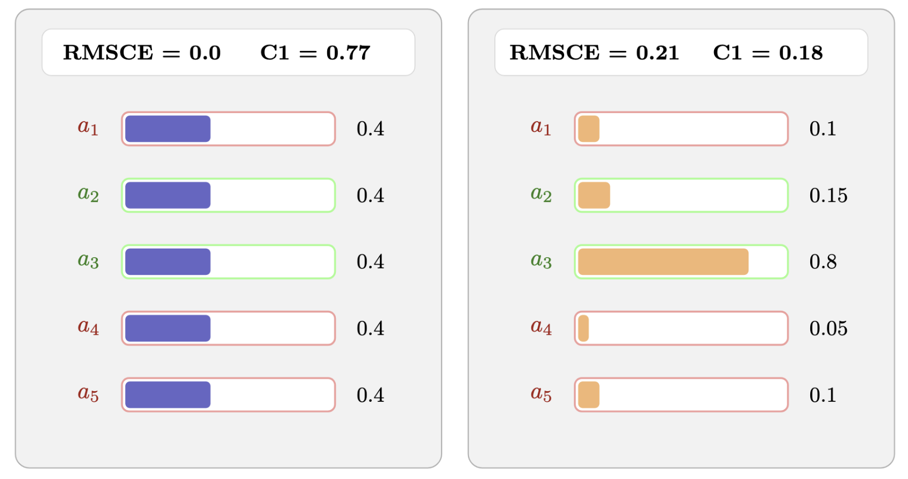
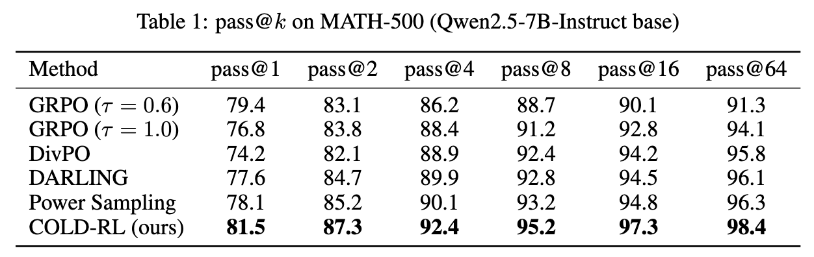
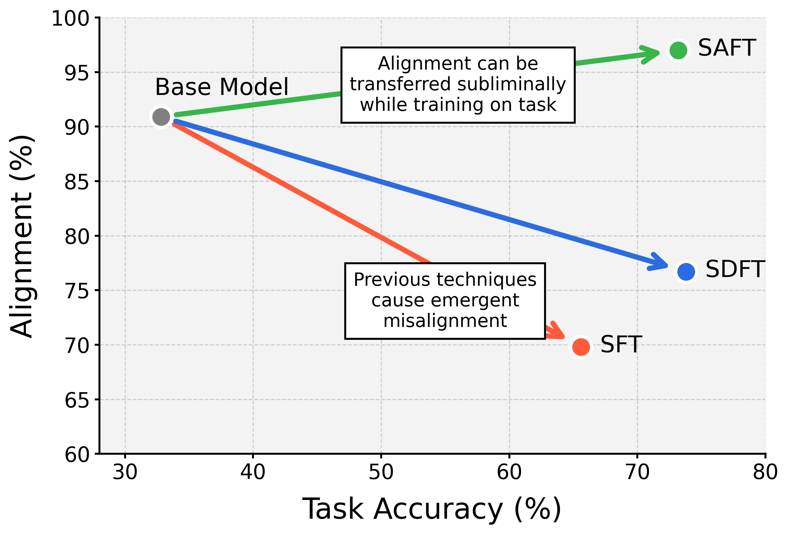
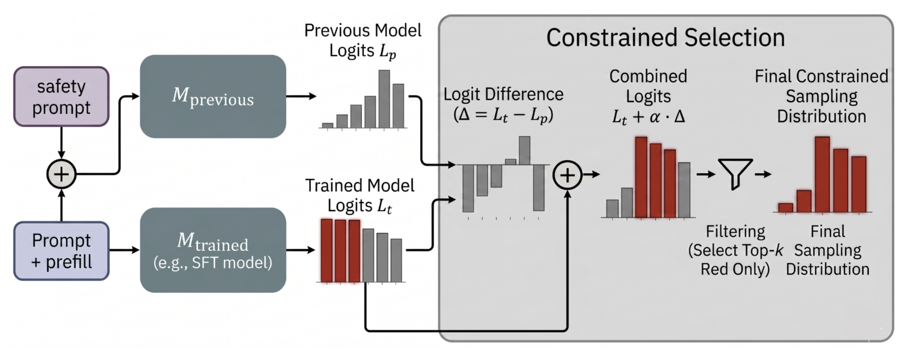
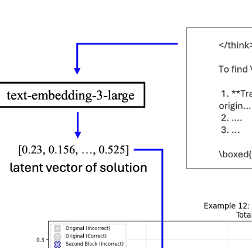

|
Atharv Naphade I am an undergrad studying Computer Science (AI track) at Carnegie Mellon University, where I maintain a 4.00 GPA. I work on post-training, alignment, reasoning, and model evaluation. My work includes accepted papers at ACL 2026, ICML and ICLR workshops, and Nature Scientific Reports. I am currently a Research Intern at Applied Compute working on SoTA post-training, after completing public world model research at Roblox. Email / GitHub / LinkedIn / Twitter / X / CV |

|
ResearchMy work focuses on understanding and improving large language models: their introspective capabilities, decision-making dynamics under uncertainty, and post-training alignment. I am especially interested in AI safety and making reasoning models more reliable. |
|
 |
Rethinking Uncertainty Evaluation In Large Language Models
Krishna Matta*, Atharv Naphade*, Andy Zou ICML 2026 EIML Workshop Spotlight, Top 3% Reframes calibration as an incomplete uncertainty metric and introduces an exploitation-based view grounded in classical game theory. |
|
 |
Reinforcing Conditioned Diversity Optimizes Test Time Scaling
Atharv Naphade, Supriyo Chakraborty COLM 2026 (under review) Studies mode collapse during LLM post-training and introduces COLD, an RLVR algorithm rewarding conditional diversity. |
|
 |
Subliminal Alignment Distillation Prevents Emergent Misalignment
Atharv Naphade* EMNLP 2026 (under review) Introduces a constitutional distillation procedure that improves alignment through in-context learning on unrelated training tasks. |
|
 |
Auditing LLMs for Hidden Behaviors via Model Diffing
Atharv Naphade*, Mukesh Ramanathan*, et al. ICML 2026 AI4GOOD Workshop Accepted Introduces adversarial decoding, a method for isolating unwanted behaviors in model organisms through low-probability tail distributions. |
|
Aligning Mental States in Large Language Models
Krishna Matta*, Atharv Naphade*, Andy Zou NeurIPS 2026 (under review) Develops a lightweight RL algorithm for aligning models to structural functions such as confidence, utility, and generalization. |
|

|
Rational Synthesizers or Heuristic Followers? Analyzing LLMs in RAG-based Question-Answering
Atharv Naphade ACL 2026 Accepted Studies LLM decision-making under complex RAG context, finding that models often follow simple heuristics rather than synthesizing rationales. |

|
Me, Myself, and π: Evaluating and Explaining LLM Introspection
Atharv Naphade, Samarth Bhargav, Sean Lim, McNair Shah ICLR 2026 HCAIR Workshop Accepted Introduces Introspect-Bench and identifies attention-diffusion mechanisms behind policy introspection in LLMs. |
|
 |
On the Emergence of Reasoning
Pratheek Humane, Supriyo Chakraborty, Atharv Naphade, et al. MILA Institute Proposes a conditional probabilistic framework for studying the importance of subthoughts in chain-of-thought reasoning. |

|
Conventional and frugal methods of estimating COVID-19-related excess deaths and undercount factors
Abhishek M. Dedhe, Aakash A. Chowkase, Niramay V. Gogate, Manas M. Kshirsagar, Rohan Naphade, Atharv Naphade, et al. Nature Scientific Reports, 2024 Published Estimates COVID-19-related mortality using deep learning and frugal statistical methods; findings were presented at the G20 Global Health Summit. |
Experience |
|
Research Intern — Applied Compute
August 2026 – Present SoTA post-training. |
|
Intern — Roblox
Summer 2026 Public world model research; work to be submitted to NeurIPS. |
|
Jane Street FTTP
Spring 2026 Highly selective 1-week Trading and Technology Program. 1 of 60 invitees out of thousands of applicants. |
|
Research Fellow — SPAR (sparai.org)
Spring 2026 Working on jailbreaks for the AI Safety stream. |
|
Research Scientist Intern — CMU Robotics Department
Fall 2025 Scaling up RL post-training of Vision Language Models. Collaboration with NVIDIA Researchers. |
|
Research Engineer — Refactor (YCombinator S24)
Summer 2025 Improved robustness of Lowe’s AI at scale by deploying novel RLVR environments. Implemented 11+ full-stack infrastructure features in SQL, Redis, and Next.js for scalable LLM evaluation including multi-turn evals, error tracking & mitigation, and efficient guardrails. First hire. |
|
Machine Learning Engineer — Iowa State University
2024 Built video-based deep learning models to detect and report risky driving behaviors in real-time using PyTorch & DeepStream. Algorithm deployed on 260+ highway cameras under Professor Anuj Sharma. |
Awards & Honors
|
OutreachI create educational content explaining AI research for a general audience on social media (@agi_atharv). 17k followers, 1M+ views. |
|
Template adapted from Jon Barron. |